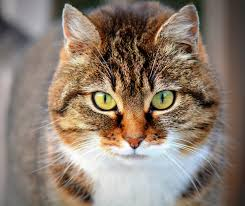
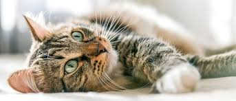

Gato Doméstico
Felis catus — família Felidae
4
kg
15
anos
O gato doméstico convive com humanos há milhares de anos, mantendo instintos de caça refinados.
Independente, silencioso e incrivelmente adaptável ao ambiente humano.
Se comunica por miados, postura corporal e ronronar. Possui visão noturna apurada e excelente equilíbrio.
Pode viver exclusivamente dentro de casa; enriquecimento ambiental é essencial para bem-estar.
“Um gato é um enigma envolto em pelos e olhar inquisitivo.”
- Surgiu: ~9.000 anos (domesticação)
- Tipo: Mamífero
- Idade Média: 12–15 anos
- Macho adulto: 4–5 kg
- Fêmea adulta: 3–4 kg
- Família: Felidae
Carnívoro estrito; dieta balanceada é crucial para saúde renal e metabólica.
A esterilização ajuda a prevenir doenças e controlar populações ferais.